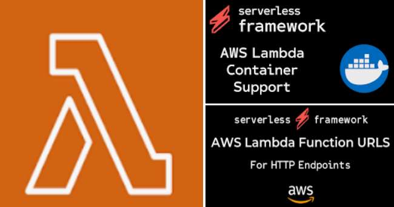
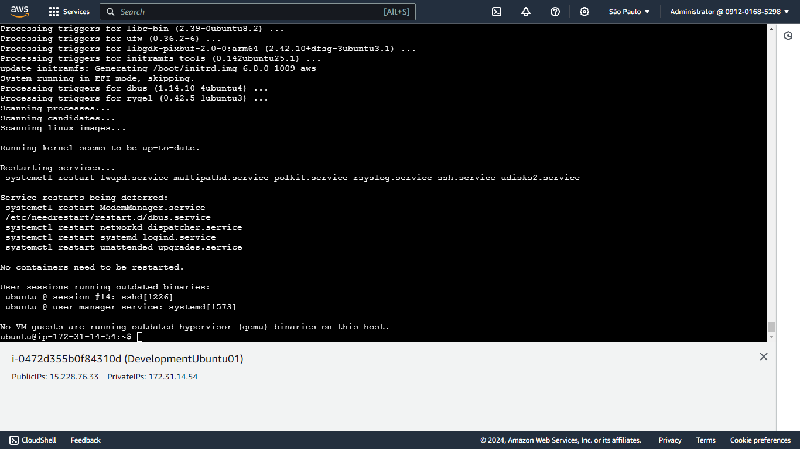
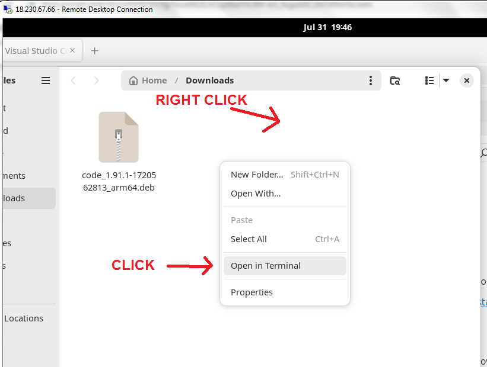
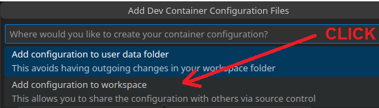
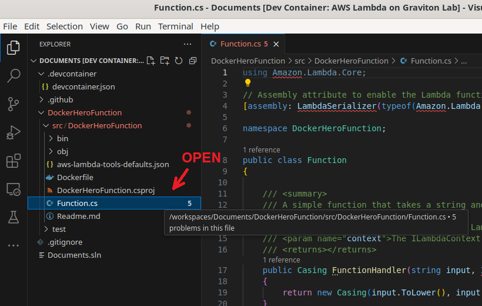

Publish a .NET 8 microservice on AWS Lambda Function using the cost effective Graviton Arm64 processor from a VS Code Docker In Docker Dev Container running on Linux/Ubuntu EC2 Instance
I wrote this all-in-one guide to help me and my colleagues to create a straightforward walk through to create a boilerplate for AWS Lambda Serverless Function from Zero to Hero.
I’ll show along this guide how to:
- Mount a development environment using AWS CLI, creating a Virtual Machine EC2 Instance running on Linux/Ubuntu and Graviton Arm64 processor
- Install the Graphical User Interface (GUI) infrastructure on Ubuntu distribution
- Install VS Code and the Docker engine
- Configure a tailor-made Docker In Docker DevContainer, having pre installed tools like .NET 8, .NET CLI, AWS CLI, Git, C# Dev Kit Extension
- Create, Build, Test, Deploy a AWS Lambda Function microservice project using .NET CLI
- Configure the AWS Lambda Function to run on AWS using Graviton Arm64 processor
| My current company is a Microsoft development powerhouse, where our systems are running on Windows Servers and written in C# on Visual Studio. I am responsible for modernizing our .NET Framework ecosystem from a monolithic architecture to a Service Oriented Architecture, using AWS Lambda Serverless Function and much more AWS technologies. As a project plus, I decided to reduce our costs as much as we could, and then I realized the AWS Graviton Processor could be a valuable alternative to be considered for our context. |
As developers we need to bring up to date solutions to our clients or stakeholders, showing that we can reduce costs, raise computational power or luckily both. Sometimes it is hard for us to convince them, because all systems in the company environment are perfectly integrated and running smoothly. So, investing in something new could be tricky and risky. |  |
| I was living this scenario here at my Fintech company which provides an Automated Trading System (ATS) using quantitative analysis from real time Bovespa Exchange market data. If you are interested about our project I really recommend this book The Man Who Solved the Market: How Jim Simons Launched the Quant Revolution that tells the amazing story about Jim Simon, the Math Genius who is considered the greatest money maker in modern financial history. It’s an inspirational story and a great use case about how technology enabled the scale and complexity we now can manage in cleaning and collecting financial instruments data. |
"We are right 50.75 percent of the time. But we are 100 percent right 50.75 percent of the time."
I was stuck in our perfect ancient world while all industries taking advantage of the distributed microservices spread in the cloud. Unfortunately, I started to have some bottleneck issues implementing machine learning new technologies within our environmental limitations. So, I decided to back up this modernization idea on my own, creating in my personal Azure account a prototype or a minimum viable product to find the financial support from my stakeholders.
I’ve always worked with a tight budget and I am very cautious about IT expenses when choosing a solution. At this time, I was sure migrating our monolithic architecture to a Service Oriented Architecture would give me the processing power I needed and also might reduce our costs. I was inspired by the concepts and designs described in this e-book written by Microsoft engineers: “.NET Microservices. Architecture for Containerized .NET Applications”.
It took months to get this project approved because of the natural fears of the uncertainty and failure. Innovation and disruption should be part of a continuous process, so I created a self-sustaining cycle that has allowed me to make this transition smoothly. |
|
As our resources here are hosted in AWS cloud, for this modernization I decided to use:
For this guide I’ll focus only on AWS Lambda implementation.

| I am a Microsoft Stack guy always developing on Visual Studio, coding in C# and consuming .NET Framework libraries since its original release in 2002. To feel the fresh tech trends, I always try to watch the developer conferences, and in 2022, when Microsoft returned to host live sessions in Seattle, I realized that the Microsoft engineers were heavily using VS Code running on Linux machines. It blew my mind because they were cheerful, developing and deploying for Linux machines. I couldn’t imagine or even accept it, but it was so mind changing that I decided to give it a chance and started to create this Linux development environment using VS Code. Perhaps Windows days are over or penguin inclusive. Anyhow, let’s drop into this big wave and stand up with our back foot. |
For this project we are going to develop with:
In the early days of my career, when I was just a junior babysaur, I worked for a Pension Fund Institution that used Cobol and they were migrating it to Access Database. Back in that paleolithic era, we literally deployed our system delivering the whole computer to the client and their support team would just plug it in their Windows NT network on the weekend and everything would work fine for users on Monday. It was more affordable for us to pay flight tickets to our engineers to deploy (ship) our systems. We didn’t suffer the dilemma: “... but it worked on my machine”
Years later we migrated our database to MS SQL Server, changed our system architecture to client-server, started hosting it in our datacenter aquarium and every developer knows what comes next, life has never been so easy again.
Back to the future, I’ve just realized that Docker could do this shipping procedure without the need to take a plane! |
|
What a wonderful world has surged, using a Docker container, we can create a machine from scratch, configure it in our way, deploy our system and ship it to the client, to the cloud or to any supported device. Easy peasy and then my dev life back to a new normal.
I’d like to suggest the following videos that helped me to better understand these concepts.
For my development environment I decided to use the Dev Containers extension in VS Code, which allows me to prepare a machine with everything I need for a specific project environment. For instance, as I am a Full Stack Developer, I usually create a Dev Container dedicated for Frontend, installing .NET 8, Node.js, React and Tailwind.css or Bootstrap components. I could create one prepared to use Angular, another one exclusively for Backend and another dedicated to Deep Learning projects consuming Python, Pandas, Jupyter, Seaborn, Scikit-learn, Keras and TensorFlow libraries. These container environments can be shared with my colleagues, saving us a lot of time and avoiding potential headaches.
| For the sake of this guide, I’ll prepare a backend Linux/Ubuntu machine, just installing VS Code, Docker and the Dev Containers extension. It is very recommended when creating a new Linux instance in AWS EC2 to choose AWS Graviton Processor, which is the cost-effective processor developed by Amazon. We will also use this processor type for our AWS Lambda Function. Keep saving coins ! |
I’ll use a Docker in Docker approach which means, we will have a Docker Container primarily running on our developer machine and another Docker Container installed inside the previous container. This container will be configured and prepared with our .NET 8 microservice implementation to be deployed to our AWS Lambda Function. It’s like a mummy Kangaroo carrying her child nestled safely in her pouch. |
|
So far so good, let’s dive into the steps to get a simple microservice coded in C# & .NET 8 using VS Code, Docker and DevContainer running on a Linux/Ubuntu machine with a AWS Graviton 64-bit ARM-based processor. Keep in mind that it is very important to follow and execute each step sequentially. Avoid skipping any of them, but if you already have a well mounted Linux environment, you can skip all the way down to step Six to install Docker.
Index
- Open AWS Console using a user with the required privileges
- For simplicity, I’ll sign in with a user having AdministratorAccess policy applied. The root user could also be an alternative for this exercise.
- Select your preferred Region. I’ll pick the data center located in São Paulo (sa-east-1), because it is the nearest to me.
- Create EC2 Instance, choosing Ubuntu Linux Distribution and Graviton Processor
- Install the Graphical User Interface (GUI) infrastructure on Ubuntu distribution
- Enable Windows Remote Desktop on Ubuntu and open console from your machine
- Install VS Code
- Install Docker and run Docker “Hello World” test
- Install the Dev Containers Extension on VS Code
- Using the Dev Containers Extension, create a Docker in Docker container
- .NET 8
- AWS Command Line
- Configure a Dev Container file for our Backend project purpose having valuable tools
- AWS Lambda tools
- AWS SDK Core
- C# Dev Kit extension
- Git
- Build and open up our created Dev Container
- Create AWS User role to access AWS Lambda resources using CLI commands
- Create Group and User
- Apply roles to Group
- Create Role and apply execution policy for AWS Lambda execution
- Set up AWS credentials using CLI commands
- Create, Build, Test, Deploy and Run the AWS Lambda project using .NET CLI
- Create .NET Lambda Empty Function project from AWS template
- Create .gitignore to avoid publishing unwanted .NET project files to GitHub
- Set ARM64 processor in the AWS Lambda Tools file configuration
- Edit Function.cs code file to execute Docker Hero Hello Message
- Edit FunctionTest.cs Unit test file to keep our code consistent and robust, running the Unit Test after building the Lambda Function code.
- Test this AWS Lambda project using the AWS .NET 8 Mock Lambda Test Tool
- Deploy this AWS Lambda project to AWS cloud using AWS CLI
- Test this AWS Lambda project in AWS console
- This Is The End, My Only Friend !
1 - Open AWS Console using a user with the required privileges
https://aws.amazon.com/
2 - Create EC2 Instance, choosing Ubuntu Linux Distribution and Graviton Processor
Very important to keep in mind that all steps we would do using the AWS console web interface, can be done using AWS CLI commands which I really recommend because it’s much simpler. I created a script that will do all the job for us. So, I put the following visual steps just to help clarify the instance specifications and then I’ll show how to use this script.
- Type “ec2” on search box and click on Instances link menu
- Click on Launch Instances button
- Let’s select Ubuntu Linux Distribution and Graviton Processor
| - Choose Amazon Machine Image (AMI) ami-02832c25e621867d1 Ubuntu Server 24.04 LTS (HVM), SSD Volume - Select architecture 64-bit (Arm) - Choose Instance type r7g.medium ( Graviton processor ) Family r7g, 1 vCPU, 8GiB Memory * try to use the max number found in the type definition. Nowadays the last generation is identified by the number 7. * important to find the letter ‘g’ which identifies instances using the Graviton processor. - Select Key Pair (login) I strongly recommend creating a new one and saving the private key in a secure and accessible location on your computer. You will need it later to connect to your instance. - Define Network settings You can use the default values, but I prefer to set the Subnet where my resources are already located. - Create Security Group I’ve created a Security Group with SSH and RDP ports opened to my machine address IP only. - Configure Storage Define just one root volume having 20 GiB using the most recent General Purpose SSD (gp3). - Click on Launch Instance |
AWS CLI is a very powerful tool, if you are comfortable running AWS CLI scripts on CloudShell, I created the script that runs the steps we did before, including the Security Group creation with SSH and RDP ports opened to our local machine.
Just open this AWS CLI script here, copy it to your CloudShell and run it.

You can better run copying each following steps on your CloudShell
#download and create file create-ubuntu-instance.sh
curl "https://sabsfilho.github.io/dev/rebrand/aws/create-ubuntu-instance.sh" > create-ubuntu-instance.sh
#check if file content is correct
cat create-ubuntu-instance.sh
#if this script file is correct, set write permission
chmod +x create-ubuntu-instance.sh
#we need to know our Public IP to configure the Security Group rules
#click here to get your Public IP
#it’s important to use a Key Pair to prove your identity when connecting to an EC2 instance
#click here to create your Key Pair
#run script passing your Public IP address and your Key Pair name
./create-ubuntu-instance.sh "YOUR PUBLIC IP x.x.x.x" "YOUR KEY PAIR NAME"
#you can use the Vim editor to change this script for your specific needs.
vim create-ubuntu-instance.sh
After running this AWS CLI script, you should get the Instance ID response. This script will keep checking until this Instance is ready to be used.
When it is ready, we can move onto the next step.
3 - Install the Graphical User Interface (GUI) infrastructure on Ubuntu distribution
Now we need to connect to this Ubuntu Instance console to install all the necessary GUI packages. You can find it by using its instance name “DevelopmentUbuntu01”. After locating it, just click on the Connect button.
If you already know the InstanceId, you can also directly access the “EC2 Instance Connect” page using the following URL. Remember to use your region and InstanceId. My datacenter region is sa-east-1.
https://sa-east-1.console.aws.amazon.com/ec2/home?region=sa-east-1#ConnectToInstance:instanceId=YOUR_INSTANCE_ID
If you see in this page, a message warning to open the SSH port to your region IP address, just open your CloudShell clicking on its icon as mentioned before and copy and paste the following command using the specified IP address.
#open port SSH to connect using EC2 Instance Connect
aws ec2 authorize-security-group-ingress --group-name "DevelopmentUbuntuSecurityGroup" --protocol tcp --port 22 --cidr 18.228.70.32/29
Click on the Connect button on the EC2 Instance Connect page.

Once the console is opened, execute each step below on the Ubuntu command prompt:
#update packages
sudo apt-get update
#install GUI packages - It is a long process and it might take around 90 minutes to complete
sudo apt-get install ubuntu-desktop
| It will be a long processing time. After finishing this installation process, I really recommend creating an Amazon Machine Image (AMI) from this instance to save time for new Instance creations.
pause to sip a cup of strong black coffee, with no sugar… |
Well done! The Graphical User Interface (GUI) infrastructure is installed on Ubuntu.

#You must reboot this instance. This step is very important.
sudo reboot
4 - Enable Windows Remote Desktop on Ubuntu and open console from your machine
My local machine is running on Windows, so I prefer to use a Remote Desktop connection to open the console. In this section, I’ll proceed installing the Remote Desktop packages. You can skip to the next section if you have another alternative.
Click on the Connect button on the EC2 Instance Connect page as mentioned before, and once the console is opened, execute each step below on the Ubuntu command prompt:
#update packages
sudo apt-get update
#install Remote Desktop packages
sudo apt install xrdp -y
#open RDP port
sudo ufw allow 3389/tcp
#set ubuntu password - type the password that will be used by Remote Desktop connection
sudo passwd ubuntu
Now we are ready to use our brand new Ubuntu/Linux virtual machine from a Remote Desktop connection interface, using its Public IP address as follows:
| Next dialog window you just confirm the identity of the remote computer.
|
Type the password you previously set in the console.
Voilá, welcome to Ubuntu !!!
|
Penguin is in the Windows ! |
If a Software Updater pops up, I recommend installing it and then reboot.
You can reboot using AWS EC2 console.
At this point, I recommend creating an Amazon Machine Image (AMI) from this instance to save time for new Instance creations.
5 - Install VS Code
I found it less traumatic to install VS Code using the visual interface installation. We need to browse this installation URL using Firefox browser. It is important to remember we are using a Graviton processor and its ARM64 architecture, which requires more attention from us.
Browse the VS Code download link and then click on the Debian Arm64 installation link
https://code.visualstudio.com/download

You can use the following link to download the correct ARM64 package for our Ubuntu distribution.
https://code.visualstudio.com/sha/download?build=stable&os=linux-deb-arm64
Following the VS Code installation instructions
Open the download folder
Open folder location in Terminal

Execute the next steps in the Terminal prompt
#get the file name
ls
#install the deb package
sudo dpkg -i <file>.deb
#install dependencies
sudo apt-get install -f
#check vs code version
code -version
Let’s open VS Code using the GUI
VS Code is installed and running.
Now we are ready to install Docker.
6 - Install Docker and run Docker “Hello World” test
Let’s install Docker on Ubuntu.
We don’t need Docker Desktop, so for simplicity I recommend installing the Docker engine only.
Open the Terminal again to set up Docker's package repository and then install Docker.
Execute each next command in prompt:
# update
sudo apt-get update
# install certificates
sudo apt-get install ca-certificates curl
# install the keyrings
sudo install -m 0755 -d /etc/apt/keyrings
# add Docker's official GPG key:
sudo curl -fsSL https://download.docker.com/linux/ubuntu/gpg -o /etc/apt/keyrings/docker.asc
# set permissions
sudo chmod a+r /etc/apt/keyrings/docker.asc
# update
sudo apt-get update
# add the repository to Apt sources:
echo \
"deb [arch=$(dpkg --print-architecture) signed-by=/etc/apt/keyrings/docker.asc] https://download.docker.com/linux/ubuntu \
$(. /etc/os-release && echo "$VERSION_CODENAME") stable" | \
sudo tee /etc/apt/sources.list.d/docker.list > /dev/null
# update
sudo apt-get update
# install
sudo apt-get install docker-ce docker-ce-cli containerd.io docker-buildx-plugin docker-compose-plugin
# run Docker test
sudo docker run hello-world
Docker is installed and running.
It is important to add root privileges to your user who will run the Dev Container inside VS Code.
# add your user to the docker group
sudo usermod -aG docker $USER
#sign out and back in again so this setting takes effect
gnome-session-quit
Now we can return back to VS Code and continue with the Dev Container installation process.
7 - Install the Dev Containers Extension on VS Code
All next steps will be done in VS Code, so, just open it.
Let’s install the Dev Containers extension in VS Code.
Open the Terminal inside VS Code and then check if Docker is ready typing the command:
docker --version
Once Docker is running, you can click on the Extensions button icon.
On the Recommended section, install the Dev Containers Extension.
8 - Using the Dev Containers Extension, create a Docker in Docker container
The following steps will be executed inside VS Code.
The objective is to create a Docker container configured to setup and run another Docker container. This is the Docker in Docker approach. We will also include into this Container the .NET CLI and the AWS CLI. These tools will help us build and deploy the .NET 8 microservice to AWS Lambda Function.
Open Command Palette | Select Dev Containers: Add Dev Container… |
VS Code will ask for a folder location for the configuration files. | For this example, I just selected Document folder |
You must trust VS Code for this test purpose.
| Open Command Palette again, Select Dev Containers: Add Dev Container
Select Add configuration to workspace  |
Type docker and select Docker in Docker
| Select Additional Options |
Select ALL options | Type dotnet and select Dotnet CLI |
Type aws and select AWS CLI |
|
The Dev Container configuration file will be created with the specifications we previously defined. Now we can run this Docker container inside VS Code, clicking in the Reopen in Container button. In the next section, I will get back to this configuration file.
The new Docker container will be built for us and then VS Code Dev Container will instantiate it, running inside its environment context.
Now we are in our new home.The Dev Containers extension created a Docker configuration file and built a new container with our environment requirements. We can test it by opening the Terminal in VS Code and typing the commands:
dotnet –version
aws –version
As we want to be heroes, now we can take a step further configuring our Docker container with more flavors. For the purpose of this guide, I’ll setup the C# language environment for VS Code and other tools, but only inside our new container. Let’s jump into the next section to see how to do that.
9 - Configure a Dev Container file for our Backend project purpose having valuable tools
Now we are ready to setup the C# language environment for VS Code by installing the C# Dev Kit extension and more, but I’ll do it using the Docker configuration file of our container. I will not do it using the regular VS Code Extension installation method.
We need to close our current Docker in Docker container to return back to the Ubuntu environment.
Click the Dev Container button at the bottom-left of the screen and then select Reopen Folder Locally.
Open terminal and check .NET and AWS versions. The error message shows that they are not installed on Ubuntu.
When I did it right for the first time, I almost cried from happiness. At the time, I was using my old Windows 7 notebook (The Lab), opening a Remote Desktop from windows to a Ubuntu/Linux machine console, having the power to be free creating as many development environment machines as I wanted without burning my cash. Now I could have individual machines for Frontend, Backend, Deep Learning, GitHub, AWS and Azure projects without any kind of conflicts and could deliver these machines to my colleagues or to cloud environments. Indeed, it was a memorable moment for me !
Now let’s open on VS Code editor the Dev Container configuration file (devcontainer.json) to add some cool features for our environment purposes.
First, let’s see what we have after this file was created from the Docker in Docker template.
We can see the operating system used in the base image, bullseye is the codename for the Debian 11 oldstable release:
mcr.microsoft.com/devcontainers/base:bullseye
And the installed features:
ghcr.io/devcontainers/features/docker-in-docker:2
* The Dev Container team already properly configured enableNonRootDocker and moby parameters. It saves us a lot of configuration and setup time !
AWS CLI framework tools (latest)
ghcr.io/devcontainers/features/aws-cli:1
.NET 8 CLI framework tools (latest)
ghcr.io/devcontainers/features/dotnet:2
Very simple! So powerful though.
I’ll change this configuration to add these specifications and functionalities.
# upgrade the operating system from Bullseye Debian 11 to Bookworm Debian 12
mcr.microsoft.com/devcontainers/dotnet:1-8.0-bookworm
# keep Docker in Docker, AWS CLI (latest) and .NET CLI (latest), but add Git:
ghcr.io/devcontainers/features/git:1
* If I would configure this environment to run Angular or React, I would also add Node.js to support server side procedures.
ghcr.io/devcontainers/features/node:1
Now I will configure something really cool. We can use 'postCreateCommand' to run commands after the container is created. I’ll install all AWS SDK libraries that I could use when developing for AWS Lambda Function projects using .NET.
"postCreateCommand": {
"AWSSDKCore": "dotnet new install AWSSDK.Core",
"ExtensionsNETCore": "dotnet new install AWSSDK.Extensions.NETCore.Setup",
"LambdaCore": "dotnet new install Amazon.Lambda.Core",
"LambdaTemplates": "dotnet new install Amazon.Lambda.Templates",
"LambdaTools": "dotnet tool install -g Amazon.Lambda.Tools",
"LambdaTestTool": "dotnet tool install -g Amazon.Lambda.TestTool-8.0"
}
* For instance, if I would consume AWS Dynamo DB NoSQL database resources, I would install this package adding this configuration.
"DynamoDB": "dotnet new install AWSSDK.DynamoDBv2"
* Maybe it would be worthwhile to configure Git credentials
"GitName": "git config --global user.name \"Docker Hero\"",
"GitEmail": "git config --global user.email \"docker.hero@gmail.com\""
We can also install the VS Code Extensions ! In order to code using the C# language, we need to install C# Dev Kit extension as follows:
"customizations": {
"vscode": {
"extensions": [
"ms-dotnettools.csdevkit"
]
}
}
I’ll also change the name of this Dev Container.
"name": "AWS Lambda on Graviton Lab",
Let’s wrap up these configurations and update the Dev Container configuration file.
{
"name": "AWS Lambda on Graviton Lab",
"image": "mcr.microsoft.com/devcontainers/dotnet:1-8.0-bookworm",
"features": {
"ghcr.io/devcontainers/features/docker-in-docker:2": {
"version": "latest",
"enableNonRootDocker": "true",
"moby": "true"
},
"ghcr.io/devcontainers/features/aws-cli:1": {
"version": "latest"
},
"ghcr.io/devcontainers/features/dotnet:2": {
"version": "latest"
},
"ghcr.io/devcontainers/features/git:1": {}
},
"postCreateCommand": {
"AWSSDKCore": "dotnet new install AWSSDK.Core",
"ExtensionsNETCore": "dotnet new install AWSSDK.Extensions.NETCore.Setup",
"LambdaCore": "dotnet new install Amazon.Lambda.Core",
"LambdaTemplates": "dotnet new install Amazon.Lambda.Templates",
"LambdaTools": "dotnet tool install -g Amazon.Lambda.Tools",
"LambdaTestTool": "dotnet tool install -g Amazon.Lambda.TestTool-8.0"
},
"customizations": {
"vscode": {
"extensions": [
"ms-dotnettools.csdevkit"
]
}
}
}
Here with my team, I copy and paste this configuration file as a standpoint for new environments just changing small pieces of it. Now our developer creativity and ingenuity is unlimited !
We are ready to build this updated Dev Container and open it to let us develop our AWS Lambda microservice project.
10 - Build and open up our updated Dev Container
Copy, paste and save the configuration we previously edited in the last section into the devcontainer.json file. Now we must rebuild this Dev Container, for that open the Command Palette and type rebuild, then click on Rebuild and Reopen in Container.
Click on the Dev Container that we edited before, “AWS Lambda on Graviton Lab”.
We can see in the Terminal automatically opened the packages installed as stated by our postCreateCommand settings. You can press any key to close the Terminal.
Our Dev Container is up and running. We can check C# Dev Kit extension installed in Extensions.
The Dev Container is ready and our development environment is prepared to build and deploy the microservice project to AWS Lambda Serverless Function.
11 - Create AWS User role to access AWS Lambda resources
It is recommended by AWS documentation the creation of a specific user that will be used in the client machine side and responsible to request AWS resource actions. I created the script that runs the steps we need to set up this requirement. So, let’s open the AWS Console using a user with the required privileges and click on the CloudShell icon.
Copy each following steps on your CloudShell
#download and create file create-ubuntu-instance.sh
curl "https://sabsfilho.github.io/dev/rebrand/aws/create-aws-lambda-user-roles.sh" > create-aws-lambda-user-roles.sh
#check if file content is correct
cat create-aws-lambda-user-roles.sh
#if this script file is correct, set write permission
chmod +x create-aws-lambda-user-roles.sh
#run script
./create-aws-lambda-user-roles.sh
#you can use the Vim editor to change this script for your specific needs.
vim create-aws-lambda-user-roles.sh
After running this AWS CLI script that I created to help us on this task, the user credentials Access (AccessKeyId) and Secret keys (SecretAccessKey) will be shown in CloudShell. Please, keep in mind they will be used in the next section to set up these credentials in the Dev Container. You might copy and paste them later.
The AWS cloud service is prepared to receive AWS Lambda deploy requests from our Dev Container.
12 - Set up AWS credentials using CLI commands
Now we just need to set up the AWS credentials in the Dev Container using the following CLI commands in the VS Code Terminal.
#input access (AccessKeyId) e secret key (SecretAccessKey). Copy and paste them from the CloudShell used in the previous section.
aws configure
13 - Create, Build, Test, Deploy and Run the AWS Lambda project using .NET CLI
Still using the Terminal in VS Code, run the following commands. Remember to change the region to yours. I am using sa-east-1 from the datacenter located in São Paulo.
# create AWS LambdaFunction project from template
dotnet new lambda.image.EmptyFunction --name DockerHeroFunction --region sa-east-1
# create .gitignore to avoid publishing unwanted .NET project files to GitHub
dotnet new gitignore
Very important to set the ARM64 processor in the AWS Lambda Tools file configuration (aws-lambda-tools-defaults.json) to set up the Graviton processor on the cloud side.
Just insert this configuration below.
"function-architecture": "arm64",
Let’s open the microservice function code file (Function.cs).
 | If a dialog window opens requesting to choose a password for the new keyring, you can define it. After continuing, you can ignore the warning message if it appears.
|
Just for fun, let’s write some code in Function.cs.
I replaced the lines 17-23 with this code.
public string FunctionHandler(string input, ILambdaContext context)
{
return $"Docker Hero message: {input}";
}
Right after, we need to make the corresponding changes in the Unit Test (FunctionTest.cs) file.
I replaced the lines 16-19 with this code.
string input = "Hello World"
var casing = function.FunctionHandler(input, context);
Assert.Equal($"Docker Hero message: {input}", casing.Lower);
Let’s build this project by opening the Terminal console and typing:
dotnet build
We can test this Lambda Function using the AWS .NET 8 Mock Lambda Test Tool by changing to the Lambda Function project directory.
cd DockerHeroFunction/src/DockerHeroFunction
And typing this command:
dotnet lambda-test-tool-8.0

Type a message between double quotes.
Click on Execute Function.
After Executing this test, we can close the browser window and press CTRL+C to return to the command prompt.
Once our code passed the Unit Test and it is running as expected, now we can deploy it to AWS cloud using the role we already created in section 11 when the script
(create-aws-lambda-user-roles.sh) was executed.
Just type this command on the Terminal console:
dotnet lambda deploy-function DockerHeroFunction --function-role DockerHeroRole
This Lambda Function was created on AWS.
Now we can consume this microservice hosted in AWS Lambda Function running this command.
dotnet lambda invoke-function DockerHeroFunction --payload "Hello !"
14 - Test this AWS Lambda project in AWS console
Let’s try this Lambda Function using the AWS console.
Search this Lambda Function.
Select the Test action.
Type “Hello from AWS !”, using Double quotes.
Run test and see the results.
This microservice worked as expected.
Now we can start to develop in our tailor made Dev Container environment, adding more projects and using GitHub. We can also share our Dev Container using Amazon Elastic Container Registry. You should give it a try. I’ll cover it in a next article. We have finished for now. Mission accomplished !
15 - This IsThe End, My Only Friend !
I’ve created this extensive document to help me guide my skeptical colleagues, who are Windows fan guys and penguin bullies, to build the environment needed to deploy a .NET 8 microservice to AWS Lambda Serverless Function, using a Ubuntu/Linux distribution and the cost-effective Graviton processor based in the Arm64 architecture. Along this process, I realized that the installation and the related configuration using this architecture was a sort of problematic depending on the installation pathway chosen. So, I decided to describe here the solutions that worked better for our development context and maybe could also help someone else outside our playground. My colleagues, who were once resistant, now are engaged and penguin fellows.
I sincerely hope you find this content useful.
I am a seasoned Full Stack Developer specializing in the Microsoft stack with more than 25 years in software development and team management, helping people in Banking, Startup and Fintech companies. I graduated in Mechanical Engineering from Federal University of Rio de Janeiro - UFRJ, and worked in their Robotics Lab until graduation. I post-graduated in Computer Science & System Project Management from Pontifical Catholic University of Rio de Janeiro - PUC-RIO also a renowned university in Brazil.
Please, reach out to me at my portfolio page: https://sabsfilho.github.io/dev/ Thanks for reading !!! |
Hop-n-pop, we never stop ! |